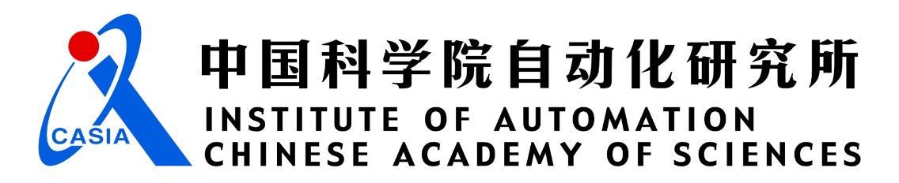
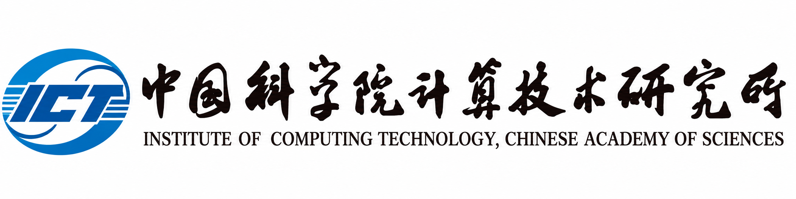

Shandong Rizhao No. 1 High School
2020.08 – 2023.06
Shandong Provincial Outstanding Student
I am an undergraduate in Internet of Things Engineering at Nanjing University of Posts and Telecommunications (NJUPT). My work explores how learning-based systems can reconstruct, understand and interact with the 3D world.
I have been pre-admitted to the master's program in Artificial Intelligence at the State Key Laboratory of Multimodal Artificial Intelligence Systems, Institute of Automation, Chinese Academy of Sciences, through recommendation with entrance-examination exemption. I expect to begin in September 2027.
During my undergraduate studies, I have worked on sparse-view 3D Gaussian Splatting, executable CAD generation, and Real2Sim environments for robot navigation. Earlier work in physics-aware sensing shaped my interest in combining learned representations with structural and physical constraints.
Also known as ++, the incremental optimist: curious about new ideas, and always learning a little more.
NV-center quantum sensing, spectral learning and signal reconstruction, connecting physical knowledge with data-driven models.
Visual perception, target tracking and spatial reasoning for robots, with deployment on embedded processors and hardware-aware optimization.
Sparse-view 3D reconstruction, multimodal CAD generation and Real2Sim–Sim2Real, toward editable worlds that robots can perceive and act in.
2020.08 – 2023.06
Shandong Provincial Outstanding Student
2023.09 – Present
B.Eng. in IoT Engineering
Advisor: Prof. Guanxiang Du
Real2Sim · 3D Vision
National Scholarship

2027.09 – 2030.06 (expected)
Incoming Master's Student in Artificial Intelligence
Admitted through recommendation with entrance-examination exemption
Computer Graphics · Vision-Language Models (VLM)
Institute for AI Industry Research (AIR)
2025.07 – 2025.08
Summer Research Student
Embodied Intelligence · Sim2Real
School of Software · GME Lab
2026.02 – 2026.09
Advisor: Prof. Enya Shen
CAD · Reinforcement Learning

IIP Laboratory · VIPL · Advisors: Prof. Shiguang Shan · Prof. Meina Kan · Zhenliang He
2025.10 – 2026.06
Research Intern
Real2Sim · 3D Vision · Embodied Navigation